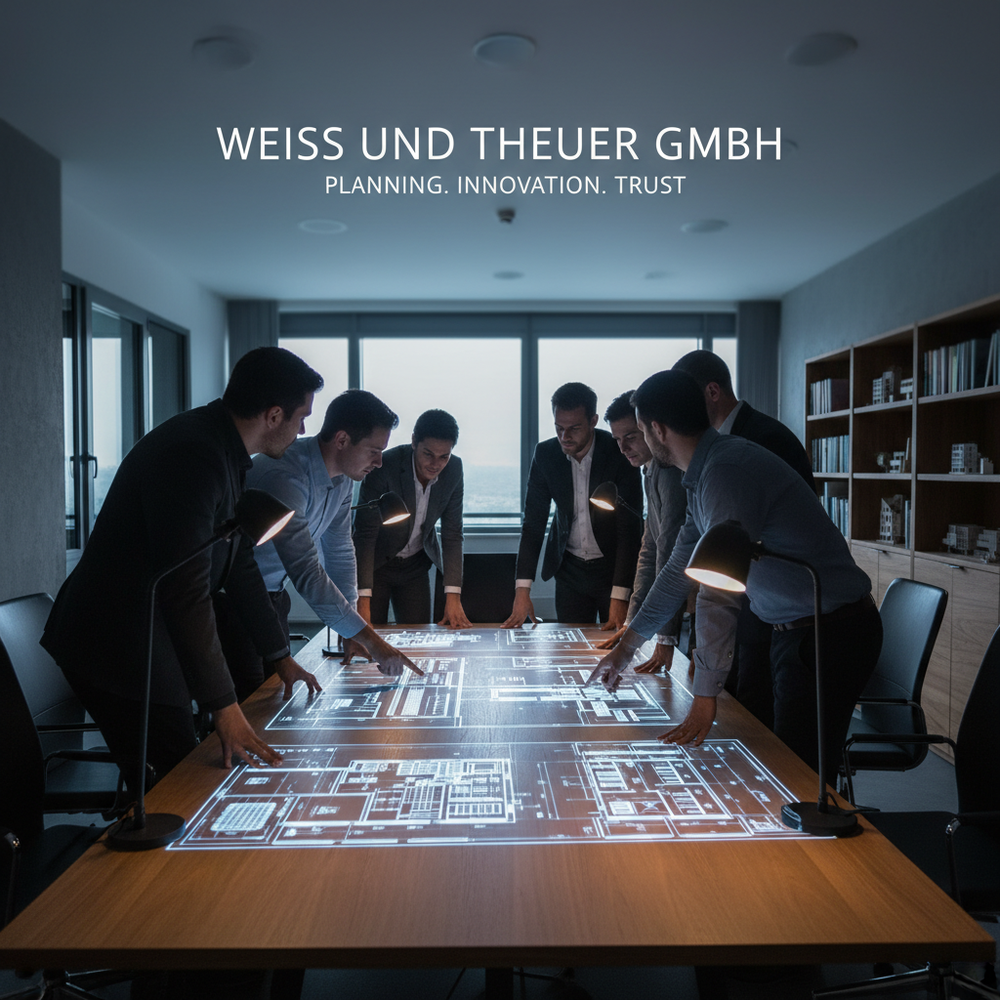
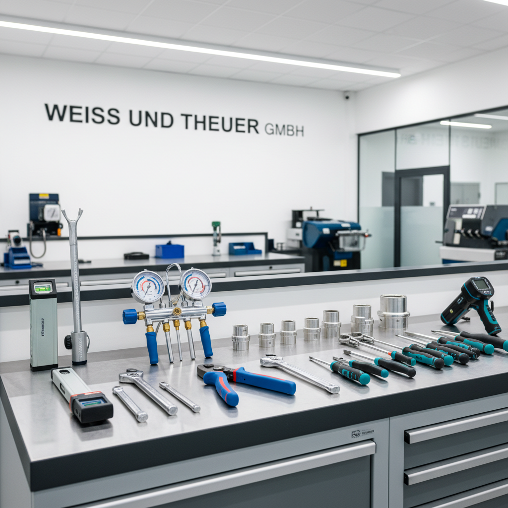
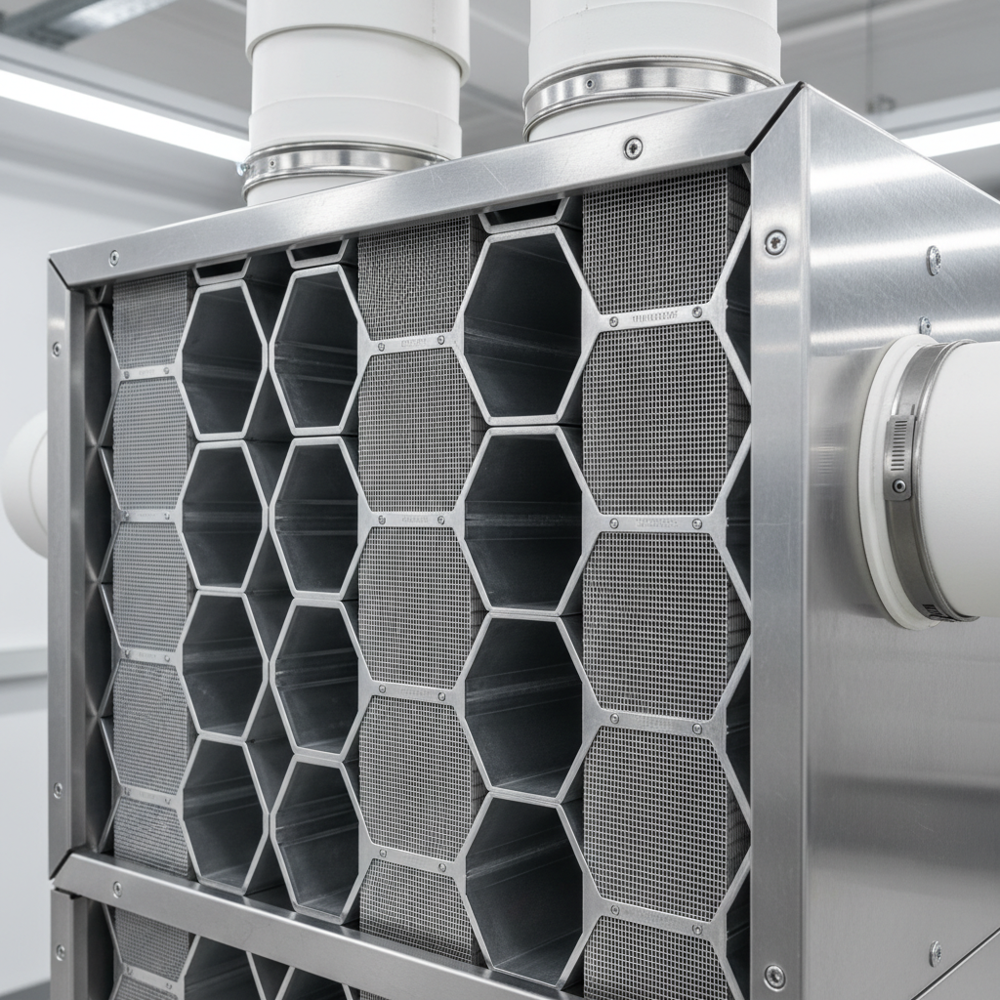
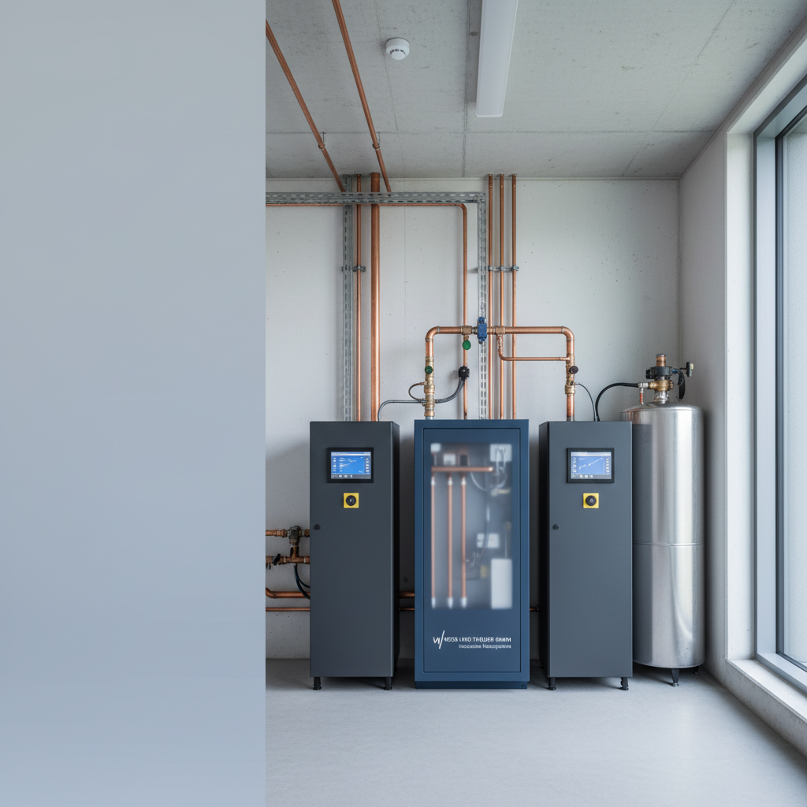

Ihr Partner seit über 30 Jahren
Erfahren Sie mehr über unsere Geschichte, unsere Werte und das Team, das hinter der Qualität von Weiß und Theuer steht.
Qualität, Innovation und Kundennähe
Die Weiß & Theuer GmbH wurde auf den Grundpfeilern von solidem Handwerk und technischem Fortschritt gegründet. Seit rund 30 Jahren sind wir in Landau und der Pfalz der verlässliche Ansprechpartner für anspruchsvolle Haustechnik. Unser Anspruch ist es, für jedes Projekt – ob klein oder groß – eine individuelle und nachhaltige Lösung zu entwickeln.
Wir investieren kontinuierlich in die Weiterbildung unseres Teams und in modernste Technik, um Ihnen stets den besten Service und energieeffiziente Anlagen auf dem neuesten Stand zu garantieren. Die persönliche Beratung und die Zufriedenheit unserer Kunden stehen für uns an erster Stelle.

Unsere Arbeit in Bildern
Hier sehen Sie eine Auswahl an Bildern, die unsere technische Expertise und die Vielfalt unserer Projekte widerspiegeln.


